TSBP: Tangent Space Belief Propagation for Manifold Learning
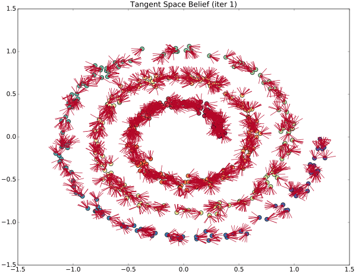Thomas Cohn
Robotics Math Computer Science
Undergraduate at the University of Michigan, jointly pursuing degrees in Computer Science Engineering and Honors Mathematics, with minors in Statistics and Music.
Robotics research intern at The Laboratory for Progress (Perceptive Robotics and Grounded Reasoning Systems) under the direction of Professor Chad Jenkins, exploring how robots can think, see, and act in common human environments.
Resume (Last updated May 2021)
Featured Videos
About Me
I am originally from Cambridge, Massachusetts, but grew up in Ann Arbor, Michigan. I've been passionate about mathematics and computer programming for most of my life, and developed an interest in robotics in high school as a member of FIRST Robotics Team 3322.
Working at The Laboratory for Progress has helped me foster my love of research, and has given me the opportunity to collaborate with an incredible group of people. My current research focuses on manifold learning and its applications in robotics. I've been able to draw on my background in advanced, theoretical mathematics to find creative solutions to challenging research questions. For example, I developed a technique to make manifold learning more robust using the tangent spaces of noisy data. This technique was the basis for my first publication, TSBP: Tangent Space Belief Propagation for Manifold Learning, which appeared in Robotics and Automation: Letters (RA-L).
Outside of the classroom (and outside of the lab), music is an important part of my life. I have played cymbals for the Michigan Marching Band since 2017, performing a variety of classical and contemporary music before crowds of over 110,000. You can find a short playlist with videos of some of my favorite performances here. I'm currently the Cymbal Section Rank Leader -- my responsibilities include running rehearsals, training and evaluating new members, writing show music, and designing visual performances. Besides marching band, I'm a member of the Michigan Hockey Pep Band, and I participate in concert percussion chamber ensembles. I also play piano.
Published Research
Major Projects
Topologically-Informed Atlas Learning

Coordinate Chart Particle Filter for Deformable Object Pose Estimation
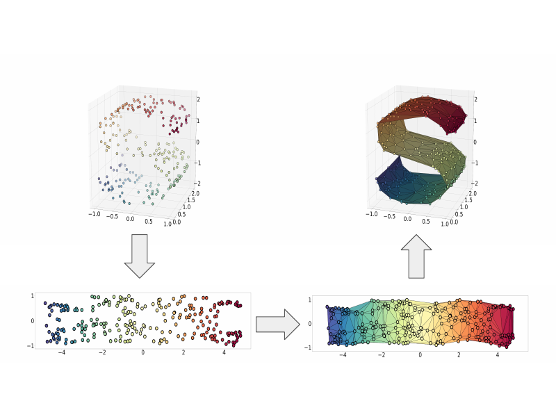Particle-Based Localization and Grasping of Grocery Bags
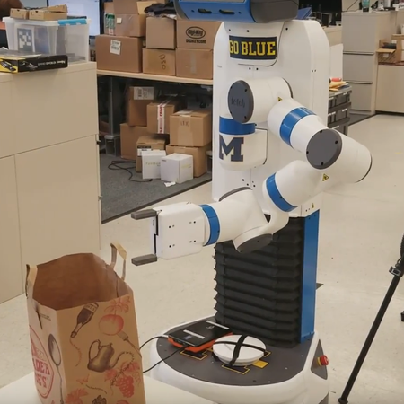Simultaneous Localization and Mapping with Iterative Closest Point
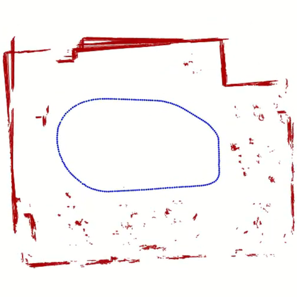Other Projects
EECS 442 Computer Vision Projects
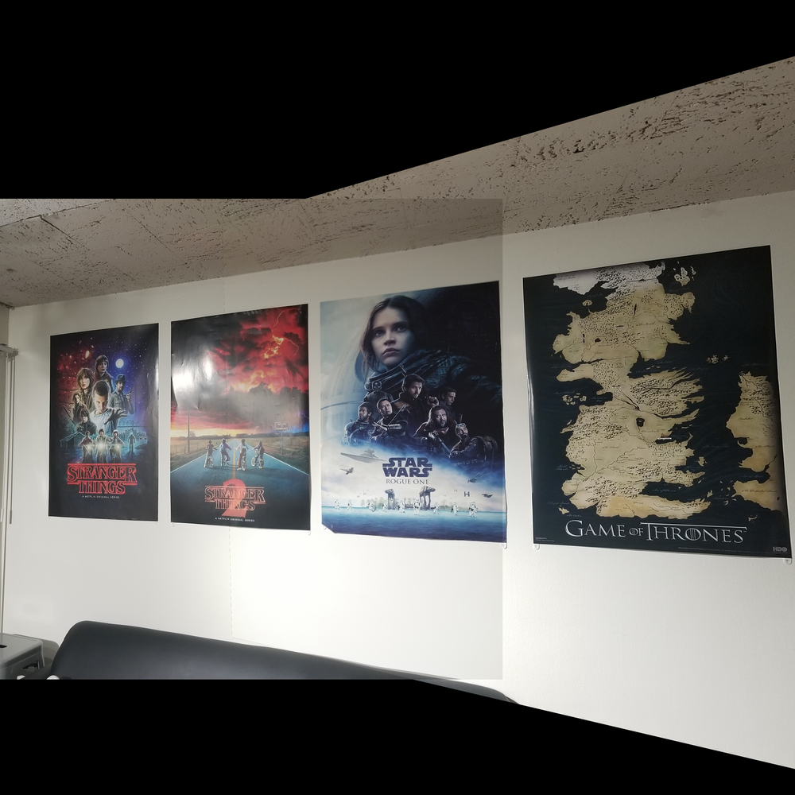EECS 367 Robotics Projects
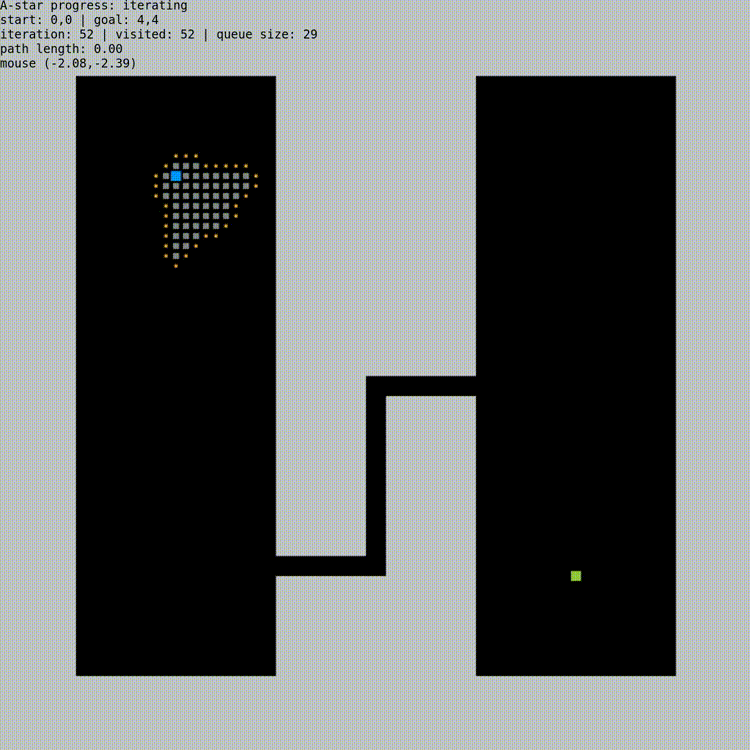Gradient Descent Catmull-Rom Spline Fitting
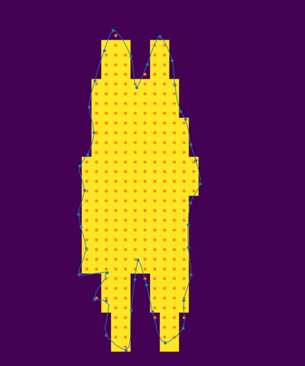Monocular Simultaneous Localization and Mapping
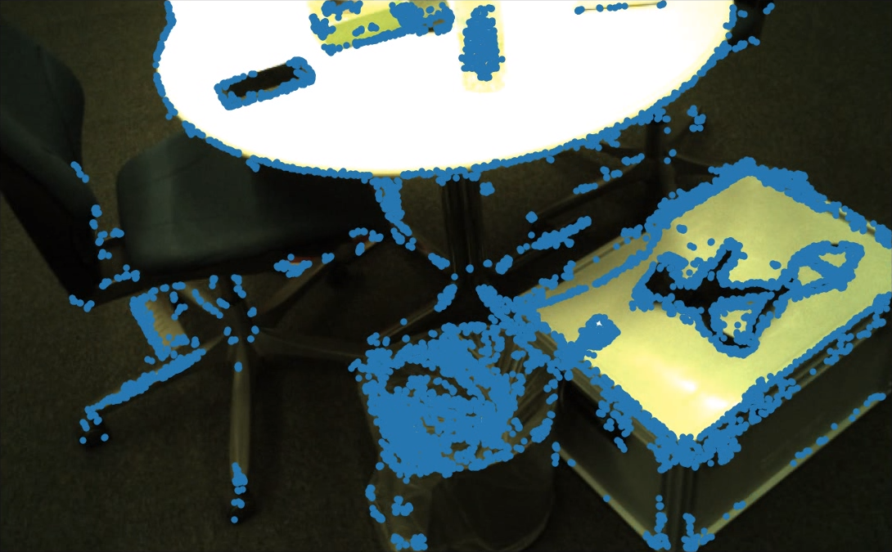Head Pose Gesture Recognition
Hurricane Track Modeling via Manifold Learning
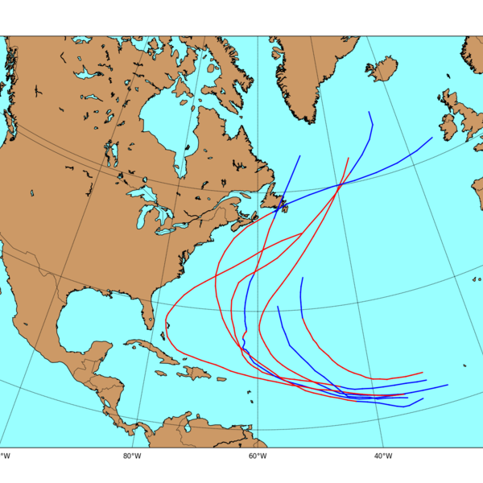Interactive Piano Lights
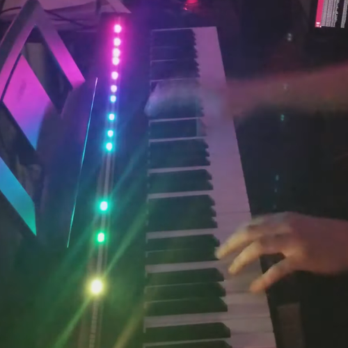Interactive Drum Lights
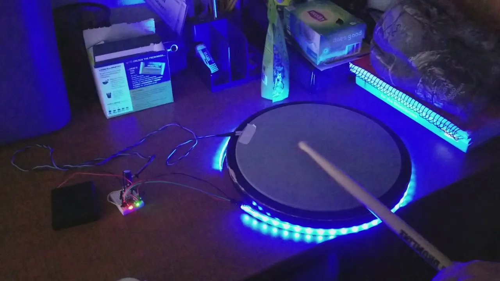Math Notes
I've partially or completely typset my lecture notes for several of the math classes I have taken. I've included links to Google Drive folders containing the PDFs, and links to the git repositories containing the LaTeX source files. (Classes are listed in reverse chronological order.)
- Math 635 (Riemannian Geometry) Taught by Professor Alejandro Uribe in 2021.
- Math 591 (Differentiable Manifolds) Taught by Professor Alejandro Uribe in 2020.
- Math 493 (Abstract Algebra/Group Theory) Taught by Professor Andrew Snowden in 2019
- Math 396 (Honors Analysis II) Taught by Professor David Barrett in 2019
- Math 565 (Graph Theory) Taught by Dr. Danny Nguyen in 2018
- Math 395 (Honors Analysis I) Taught by Professor David Barrett in 2018
- Math 217 (Proof-Based Linear Algebra) Taught by Dr. David Fernández Bretón in 2016
Interactive Javascript Demos
I've created several interactive javascript demos, which you can try out online (no downloads required). I recommend you access these on a computer -- I can't guarantee they'll work on a mobile device.